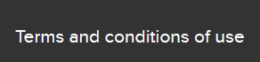

Welcome! Please use this tab to familiarise yourself with the concept of 'asylum seekers'
Asylum, by definition, is the act of a state granting protection to someone who has left their own country as a political refugee. Those wishing to undertake this process are known as ‘asylum seekers’. Those that have successfully been granted this asylum are referred to as ‘refugees’.
The application of asylum is typically initiated because the seeker has undergone violations against their human rights, or because there is a fear of persecution (hostility). These factors are often attributed to aspects of the seeker that include religion, sexuality, political standpoint or nationality.
This site refers to data from the UNHCR to determine the rates of asylum seekers from 2008 to 2023. In third tab, we compare the rates of how each country that had residents apply for asylum in Australia have changed over time, and how Australia has responded to these applications. In fourth tab, the data broadens and you will have the opportunity to search the rates that residents are either leaving the country, or applying to specific countries. You will gain the ability to ability to see the world-wide relationship and repercussions between these options.
For more information please refer to the UNHCR's methodology, as well as the terms of use guidelines:
To enhance your overall experience when using this site, please familiarise yourself with the following information
Use the dropdown to learn how Australia has responded to each country's asylum requests